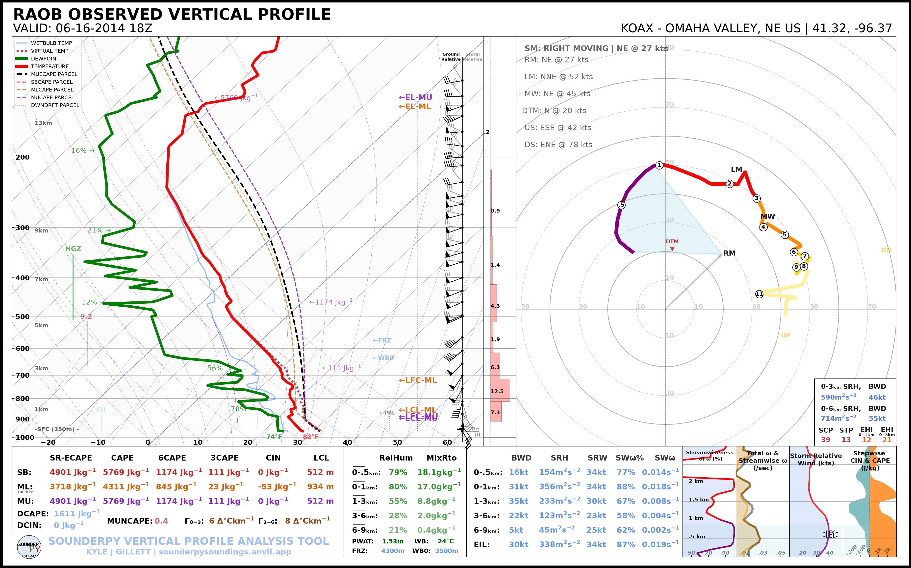
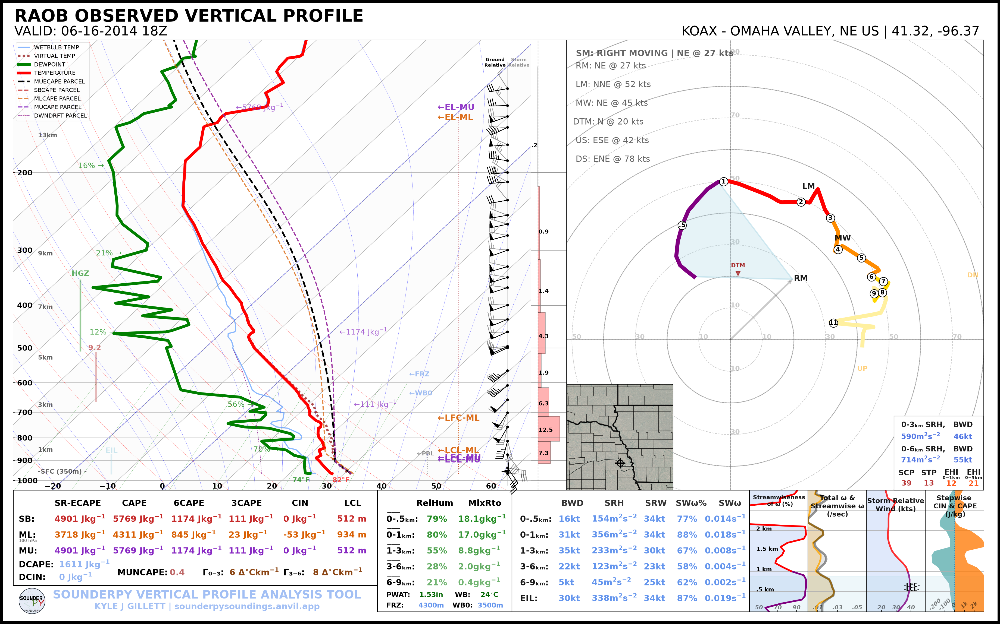
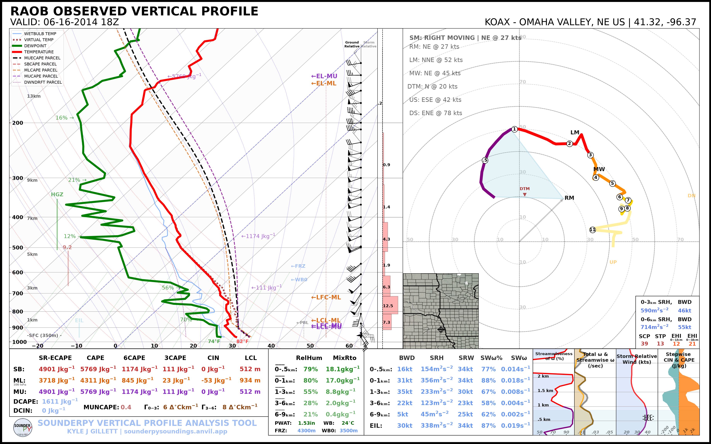
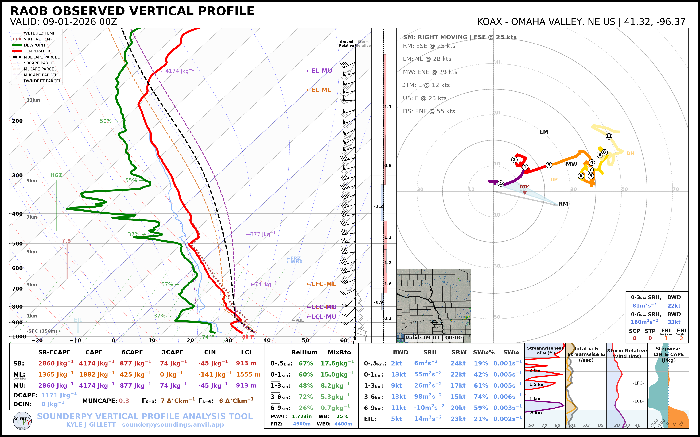

🗺️ Maps & Radar
SounderPy sounding and hodograph plots can include a geographic inset showing the profile location and, when available, radar reflectivity.
This tutorial covers:
disabling the map entirely;
displaying the map without radar;
changing the map extent;
displaying single-site WSR-88D reflectivity;
displaying recent CONUS mosaic reflectivity;
selecting the radar valid time.
Note
Map and radar features require internet access to external data and mapping services. Radar availability also depends on the requested date, location, and upstream archive.
Retrieve an Example Sounding
The archived examples use the OAX sounding from 16 June 2014 at 18 UTC:
import sounderpy as spy
data = spy.get_obs_data(
"OAX",
"2014", "06", "16", "18",
hush=True,
)
Disable the Map
Set map_zoom=0 to hide the map inset:
spy.build_sounding(
data,
radar=None,
map_zoom=0,
)
{kind=link}

This is useful when:
the map does not add useful context;
you are creating a cleaner publication figure;
you are working with limited or no network connectivity.
Display a Map without Radar
Set radar=None while keeping map_zoom greater than zero:
spy.build_sounding(
data,
radar=None,
map_zoom=2,
)
{kind=link}

Change the Map Extent
map_zoom controls the size of the geographic area shown around the profile
location.
For example:
spy.build_sounding(
data,
radar=None,
map_zoom=4,
)
{kind=link}

Use smaller or larger values depending on the geographic context you want to
show. Setting map_zoom=0 removes the inset completely.
Single-Site Radar
Set radar="single" to request reflectivity from the nearest supported
WSR-88D site:
spy.build_sounding(
data,
radar="single",
radar_time="sounding",
map_zoom=2,
)

Single-site radar availability depends on the radar site and requested time.
Radar Mosaic
Set radar="mosaic" to use the supported CONUS reflectivity mosaic:
spy.build_sounding(
data,
radar="mosaic",
radar_time="sounding",
map_zoom=2,
)
{kind=link}

Important
Mosaic reflectivity is a recent-data product. Historical soundings outside
the supported mosaic window should use radar="single" when archived
single-site radar is available, or radar=None.
Radar Timing
radar_time controls which time is requested for radar data.
Use the sounding valid time:
radar_time="sounding"
or request the current time:
radar_time="now"
A typical sounding-time request is:
spy.build_sounding(
data,
radar="single",
radar_time="sounding",
map_zoom=2,
)
The Same Options on Hodographs
The standalone hodograph accepts the same map/radar arguments:
spy.build_hodograph(
data,
radar="single",
radar_time="sounding",
map_zoom=2,
)
or:
spy.build_hodograph(
data,
radar=None,
map_zoom=0,
)
CLI Examples
Map disabled:
sounderpy obs OAX 2014-06-16 18 \
--plot sounding \
--map-zoom 0
The current CLI exposes map zoom directly. More specialized radar selection is available through the Python plotting API.
Troubleshooting
If the map works but radar does not:
confirm that the requested radar mode is supported;
confirm that radar data exist for the requested time;
try
radar=Noneto determine whether the issue is radar-specific;for mosaic data, try a recent sounding;
for older cases, try
radar="single".
If neither map nor radar is needed, map_zoom=0 provides the simplest and
most robust plotting path.
Next Steps
Continue to Parcel Settings to customize the parcel traces displayed on a sounding.
See also: